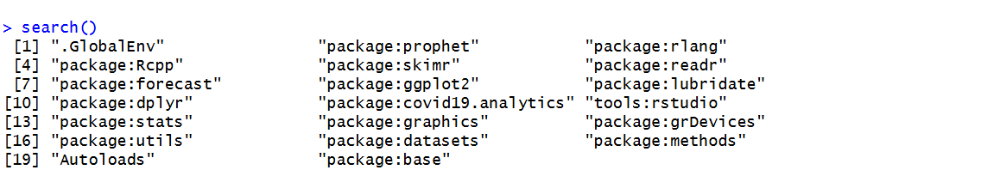
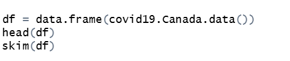

1 Forecasting with COVID-19 data using R packages covid19.analytics, forecast, and prophet
This user guide will demonstrate how to attain data from COVID-19 using the covid19.analytics
1.1 1. Open RStudio
If you have not yet installed RStudio or would like to update your version of RStudio, visit the following link: https://posit.co/downloads/. Create a new R script.

1.2 2. Install and Load Packages
Install the following packages1 if you have not already:
covid19.analytics- for the purposes of this guide, this package will be used to access various data sets about COVID-19
dplyr- dplyr is a R standard for creating data pipelines and transforming data frames to fit the desired format
lubridate- dates often require special packages for processing, such as noting the different possible forms that dates can come in (mm/dd/yyyy, yy/mm/dd, etc.). This belongs under the package
tidyverse
- dates often require special packages for processing, such as noting the different possible forms that dates can come in (mm/dd/yyyy, yy/mm/dd, etc.). This belongs under the package
ggplot2- popular package for data visualization. For exploration of other uses of
ggplot2, visit this cheat sheet, also included intidyverse
- popular package for data visualization. For exploration of other uses of
forecast- package that brings simple forecasting ability
readr- also belonging underneath
tidyverse,readrallows for easier manipulation of data frames
- also belonging underneath
skimr- package used to skim data frames for basic data exploration and suggestion of the forms of the data used. It gives summary statistics of each column in a data frame
prophet- package that allows for forecasting with more complex trends such as seasonal trends
To install packages, use the function install.packages() with the package name in quotation marks. Be sure to comment out this code afterwards so it doesn’t repeatedly install the code if you run all of the code at once.
In order to use these packages in your code, add them to the library using library(). This will add them to your active session in the order of which you executed the lines of code. To see which packages have been added to the active session and their order, execute the search() function without any parameters. You can use this to validate that you have all of the packages listed above.

1.3 3 Load in Data
In the covid19.analytics package, there are a few data sets that can be loaded in and used for easy examples. This user guide will demonstrate forecasting using its Canada data, accessed through covid19.Canada.data()

head(df) provides the first 6 observations in the data frame df.
1.4 4 Check Date Format
1.5 5 Transform data
Create a new column in the data set from previous ones
1.6 6 Forecast New Data
1.7 7 Plot
For comparison, plot both the forecasted and original data.
1.8 8 Compare
forecasting between prophet and forecast